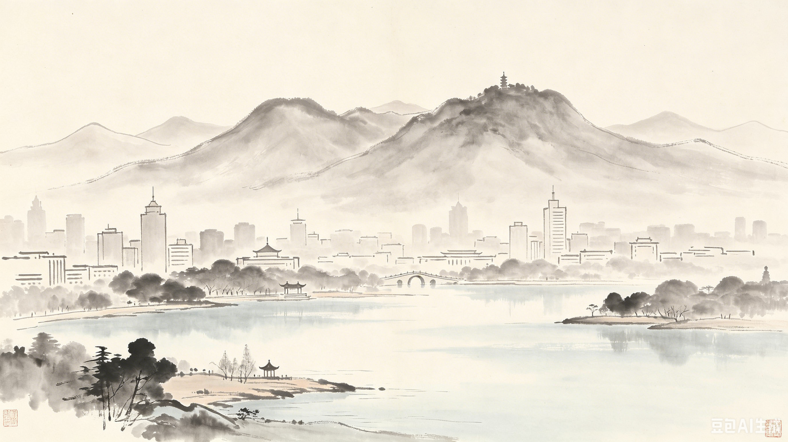

城市速写
一座折叠的城——给翻开这本书的你
南京，六朝古都，十朝都会。2500余年的建城史在这里层层叠加，山水城林在这里融为一体。翻开这本书，你将穿越时间，触摸一座城市的灵魂。从石头城下的孙权，到梧桐树下的民国旧梦；从桨声灯影里的秦淮河，到钟山风雨中的红色记忆——金陵的故事，从来不只一个朝代、一种面孔。这本书，为你折叠了南京的过去与现在。每一页，都是一个时代的切片；每一次翻页，都是一次时空的穿越。

金陵印象

六朝烟雨，十朝风华。一页金陵，千年回响。

第一章 十朝叠影
「江南佳丽地，金陵帝王州。」—— 谢眺《入朝曲》
南京，是中国建都朝代最多的城市之一。从公元229年孙权在此建都开始，东晋、南朝宋齐梁陈、南唐、大明、太平天国、中华民国——十个朝代在这片土地上留下了层层叠叠的印记。
孙吴 · 石头城下
公元229年

公元229年，孙权在武昌称帝，同年迁都建业——这是南京第一次成为一国都城。他看中了石头山一带的险要地势，在此修筑城堡，以江为池，以山为壁。南京的都城史，就此拉开序幕。
从那时起，金陵的兴衰便与长江的浪花紧紧相连。孙权在此建立的不只是一座城，更是一个国家的政治中心。他在这里屯田、兴学、造船、通商，为后来的六朝繁华奠定了最初的基石。石头城，见证的不仅是孙权的雄心，更是南京作为都城的起点。
南朝 · 四百八十寺
公元420-589年

宋、齐、梁、陈四朝相继定都建康，佛教在此达到鼎盛。杜牧笔下「南朝四百八十寺，多少楼台烟雨中」，写的就是彼时金陵佛寺林立的盛况。今日鸡鸣寺，便是当年南朝首寺的同泰寺旧址。南朝还留下了大量陵墓石刻——辟邪、天禄，昂首挺胸，守护着六朝的余晖。
南朝佛教的兴盛，不仅体现在寺庙的数量上，更体现在它对城市生活的影响。每逢佛诞日，建康城中香火缭绕，钟磬之声此起彼伏。皇室贵族争相捐建寺庙，百姓们也虔诚供奉。佛教，在彼时不仅是一种信仰，更是一种生活方式。南朝四百八十寺，每一座寺庙，都是建康城的一盏明灯。
大明 · 世界第一城垣
公元1368年

朱元璋定都南京，修建了世界上最长的城墙——明城墙。全长约35公里，现存25公里，中华门瓮城更是世界上保存最完好的古代军事城堡。六百多年过去，城墙依然蜿蜒如龙。明孝陵——朱元璋与马皇后的合葬陵墓，神道上的石象路秋景，被誉为「南京最美600米」。
修建明城墙，是一项庞大的国家工程。据记载，城砖的烧制由长江中下游的二十多个府县共同承担，每块城砖上都印有府县名、窑匠名和监造官名，责任到人。六百多年后的今天，我们依然能在城墙上看到这些铭文——那是六百年前匠人们留下的「签名」。中华门瓮城，更是中国古代军事防御工程的巅峰之作，其瓮城结构、藏兵洞设计，无不体现着古人的智慧。
民国 · 首都气象
公元1927-1949年

1927年，国民政府定都南京，开启了首都建设的新篇章。中山大道、颐和路公馆区、紫金山下的中山陵，都建成于这一时期。一条颐和路，半部民国史——200多座民国公馆掩映在梧桐树下，静静地记录着那个时代的风云。
民国时期是南京城市建设的黄金时代。中山大道以宽阔的气势横贯城市，成为南京第一条现代城市主干道。颐和路公馆区，则代表着那个时代的居住理想——宽敞的花园、精致的洋楼、茂盛的梧桐，构成了一幅民国上流社会的生活图景。中山陵的建筑设计尤为经典，其「自由钟」的造型，象征着孙中山先生「唤起民众」的遗愿。从中山门到中山陵，一条中山大道，串联起南京近代史的脉络。
玄武湖 · 六朝记忆

玄武湖，古称桑泊，六朝时是皇家园林。东晋时，这里是操练水军的演武场；南朝时，湖边建起华美的园林。宋代，王安石任江宁知府时，一度将湖水泄去，改为农田。一个湖，半部金陵史。
玄武湖的名字，源于「玄武」——中国古代神话中的北方之神。在六朝时期，玄武湖不仅是皇家园林，更是军事重地。东晋在此操练水军，南朝在此演练水战，湖水见证了无数场风起云涌。宋代王安石「泄湖为田」的举动，让玄武湖一度变成粮田。直到明代，玄武湖才重新蓄水，恢复湖面。这一片湖水，浓缩了南京近两千年的变迁。

第二章 游目金陵
「游目骋怀，信可乐也。」—— 王羲之《兰亭序》
南京的美，在山水，在城林，在千年文脉滋养下的一草一木。本章精选十处必游之地，带你用脚步丈量这座城市的厚度与温度。
南京的风景，从不单调。紫金山的雄伟，玄武湖的秀丽，秦淮河的婉约，明城墙的苍劲——每一处风景，都有自己独特的气质。你可以在中山陵拾级而上，感受一代伟人的庄严；你可以在夫子庙漫步，聆听千年科举的回响；你可以在颐和路骑行，穿越民国街巷的浪漫。南京的美，需要你亲自去发现。
从紫金山巅俯瞰，南京城的轮廓在山水之间舒展；从明城墙上远眺，秦淮河蜿蜒如带，穿城而过。这座城市的美，不仅在于它拥有多少名胜古迹，更在于这些风景与城市的日常生活融为一体。你会在清晨的玄武湖边看到晨练的老人，会在黄昏的夫子庙遇见拍照的游人，会在深夜的颐和路听到风吹过梧桐叶的声音——这才是南京最动人的风景，它活在每一个人的日常里。

01 · 中山陵
象征三亿九千二百万同胞
02 · 夫子庙-秦淮风光带
夫子庙-秦淮风光带是南京历史文化的核心区域，也是每一位到访南京的游客必去的地方。大成殿庄严肃穆，是祭祀孔子的场所；江南贡院诉说着千年科举往事，无数文人墨客曾在此追逐功名。秦淮河两岸，自古以来就是南京最繁华的地带，商贾云集，游人如织。
夫子庙不仅是旅游景点，更是南京市民的日常去处。每逢节假日，这里人潮如织，热闹非凡。你可以在老字号店铺品尝秦淮小吃，也可以走进中国科举博物馆，了解科举制度从创立到废止的完整历史。从夫子庙到老门东，这一带是体验南京市井文化的最佳去处。

03 · 明孝陵
朱元璋定都南京后，亲自选址紫金山南麓修建陵墓。陵园建筑宏伟，从下马坊到宝顶，依次分布着碑亭、神道、金水桥、文武方门、享殿等建筑。神道两侧的石象生——骆驼、大象、狮子、獬豸——六百多年来守护着这片陵寝。
明孝陵在清代得到保护，康熙帝曾亲临祭奠，并题写「治隆唐宋」碑。清朝统治者对前朝陵寝的尊重，体现了中华文明的传承。乾隆帝六次南巡，每次都会到明孝陵祭拜。
明孝陵被列入世界文化遗产名录，向公众开放。神道上的石象路秋景，被誉为「南京最美600米」。每年秋季，无数摄影爱好者来到这里，记录下这片金色的盛宴。
04 · 玄武湖公园

春·樱花
湖畔樱花如云似霞，樱花大道绵延数里。每年3月至4月，玄武湖的樱花与鸡鸣寺的樱花一起，构成南京最美的春色。

夏·荷花
接天莲叶无穷碧，荷香弥漫整个湖区。玄武湖的荷花品种繁多，从6月到9月，湖面上荷花开了一茬又一茬。

秋·银杏
满树金黄，落叶铺成黄金路。玄武湖的银杏大道是南京秋季最受欢迎拍照打卡地之一。

冬·雪景
白雪覆湖，远山如黛，近水含烟。冬日玄武湖的静谧，是南京难得的宁静时光。
05 · 总统府
朱元璋封其子朱棡为汉王，在此兴建汉王府。汉王府是明代南京城内规模最大的王府之一，府邸建筑宏伟，园林精致。
清朝在此设立两江总督署，总督管辖江苏、安徽、江西三省。两江总督是清代最重要的地方官职之一，林则徐、曾国藩、左宗棠等名臣都曾在此任职。
洪秀全攻入南京后，将此地改为天王府，作为太平天国的政治中心。天王府的规模远超清代总督署，金碧辉煌，气势恢宏。
国民政府定都南京后，此处成为总统府，蒋介石曾在此办公。总统府内保存了大量民国时期的办公家具和文物，是了解中国近代史的重要窗口。
一扇门，推开五个时代。
06 · 南京博物院
历史沿革
南京博物院是中国三大博物馆之一，前身是1933年蔡元培先生倡建的国立中央博物院，是中国第一座由国家投资兴建的大型综合性博物馆。
馆藏特色
拥有各类藏品42万件，涵盖从旧石器时代到近现代的各个历史时期，尤以江苏地区的出土文物最为丰富。玉器、青铜器、瓷器、书画、竹木牙雕——每一件文物都是一段历史的见证。
建筑风格
博物院主体建筑由著名建筑师梁思成设计，采用"辽代建筑"风格，气势恢宏，古朴典雅。
07 · 老门东
非遗手艺
金陵剪纸、南京云锦、秦淮灯彩、绒花制作——这些传统手艺在老门东的街巷中代代相传，每一件作品都承载着南京的记忆。
老味道
鸭血粉丝、梅花糕、小郑酥烧饼、蓝老大糖藕粥、蒋有记锅贴——老门东是南京小吃的聚集地，每一种味道都在诉说着南京的故事。
市井烟火
老门东的每条小巷都有自己的故事。箍桶巷、三条营、剪子巷——这些名字里藏着南京城南的旧日时光。
08 · 颐和路民国公馆区
颐和路开始规划建设，成为民国时期南京最高档的住宅区。社会名流、政府高官、文化名人纷纷在此安家。
颐和路的名字，取自《诗经》中的"颐养天和"，寓意和谐安宁。当时的规划者希望这里成为南京最宜居的街区。道路两旁种植的法国梧桐，至今已有近百年树龄，成为南京最动人的城市意象之一。
民国公馆陆续建成，200多栋风格各异的建筑掩映在梧桐树下。西班牙式、英式、法式、美式——每一栋都有自己独特的建筑语言。
这些公馆的主人，包括国民政府要员、文化名流、商界巨子。每一栋建筑背后，都藏着一段风云往事。如今，许多公馆已改为博物馆、美术馆或主题咖啡馆，在保护历史的同时焕发新生。
国民政府时期，颐和路成为政治中心，许多重要会议在此召开。
1945年抗战胜利后，颐和路迎来了新的辉煌。国共谈判期间，许多重要会晤在此举行。可以说，颐和路的每一块砖瓦，都见证了中国近代史的波谲云诡。
作为历史街区，颐和路向公众开放，成为南京最受欢迎的Citywalk路线之一。
如今的颐和路，是南京最受年轻人欢迎的打卡地之一。春日的绿荫、秋日的金黄、冬日的静谧，四季皆景。你可以在路边的咖啡馆点一杯咖啡，坐在梧桐树下，看时光缓缓流淌。
09 · 牛首山文化旅游区
佛顶宫
以供奉世界唯一佛顶骨舍利而闻名。佛顶宫设计极具现代感，巨大的穹顶与莲花造型令人震撼。佛顶宫内部装修极为华丽，穹顶如天穹，壁画如云霞，置身其中，庄严神圣。
佛顶骨舍利
佛顶骨舍利是佛教界至高无上的圣物。在牛首山的佛顶宫，你可以在庄严的氛围中瞻仰这一圣物，感受佛教文化的神秘与崇高。
自然风光
牛首山四季皆有风景，春有花海，夏有绿荫，秋有红叶，冬有雪景。每年春夏之交，牛首山花海如潮，是自然与人文的双重盛宴。
10 · 侵华日军南京大屠杀遇难同胞纪念馆
铭记历史
这是一处承载着沉重民族记忆的场所。通过大量史料、实物与影像，还原历史真相，传递"铭记历史、珍爱和平"的信念。馆内详实的史料和影像记录着那段黑暗岁月的点滴。
和平之愿
纪念馆由齐康院士设计，整体色调灰白，以"生与死""痛与爱"为主题。入口处的"哭墙"上，刻着遇难同胞的名字；广场上的"和平雕塑"象征着对和平的向往。
国家公祭
每年12月13日，国家公祭仪式在此举行，警钟长鸣，提醒世人：铭记历史，珍爱和平。
四时风物 · 春
南京的春天，从梅花山开始。天下第一梅山，万余株梅花凌寒绽放，云蒸霞蔚。每年2月至3月，梅花山的梅花与明孝陵的樱花一起，构成南京最美的春色。梅花是南京的市花，象征着这座城市坚韧不拔的精神。
漫步梅花山，空气中弥漫着淡淡的幽香，花瓣随风飘落，如雪如雾。梅花山上的观梅轩，是赏梅的最佳位置，登高望远，万亩梅海尽收眼底。除了梅花，鸡鸣寺的樱花也是南京春日的盛景。每年3月下旬，樱花大道如云似霞，游人如织，是南京最热闹的春日活动。
南京的春天，不仅属于梅花和樱花，也属于遍布街巷的梧桐新芽。当梧桐树冒出第一片嫩叶，整座城市都开始苏醒。你可以在玄武湖畔的草地上铺一块野餐垫，在春风中享受一个慵懒的午后。南京的春天，是短暂的，也是绚烂的。它提醒我们，美好的事物总是转瞬即逝，所以要格外珍惜。
春天的南京，是一首轻柔的诗。它没有夏日的热烈，没有秋日的悲凉，没有冬日的肃穆，它只有一种温柔的、让人心安的暖意。走在南京的街头，春风吹过脸颊，带来花香和泥土的气息，你会觉得，这座城市的每一寸土地，都在春天里重新焕发了生机。
四时风物 · 秋
中国四大赏枫胜地之一，满山红叶如火烧。每年11月至12月，栖霞山的枫叶进入最佳观赏期，满山遍野的红色，是南京秋季最壮丽的风景。
栖霞山不仅以枫叶闻名，山中还有千年古刹栖霞寺，寺内供奉着舍利子，是佛教圣地。登山赏枫，一路古木参天，梵音缭绕，红叶与古寺相映成趣，美不胜收。除了栖霞山，明孝陵的石象路秋景同样令人心醉。神道两侧的银杏叶金黄如盖，石象生在落叶中静默伫立，被称为"南京最美600米"。
南京的秋天，是短暂的，却是最动人的。当梧桐树的叶子开始变黄，当满城的桂花开始飘香，南京便进入了一年中最美的季节。你可以在颐和路骑行，在铺满落叶的路上缓缓前行，感受秋日的阳光透过梧桐叶洒在身上的温暖。南京的秋天，是一种让人安静下来的美。
秋天的南京，是诗意的。它没有春天的绚烂，没有夏日的热烈，没有冬日的肃穆，它只有一种沉静的、悠远的美。走在明孝陵的神道上，看落叶在风中起舞，你会觉得，这座城市的历史，在秋天里变得格外清晰。每一片落叶，都像是一页泛黄的书页，记录着南京的过往与现在。
更多胜迹
栖霞山的枫叶、鸡鸣寺的樱花、南京长江大桥的巍峨、阅江楼的壮阔、甘熙故居的雅致、紫金山天文台的深邃、灵谷寺的幽静、大报恩寺遗址公园的宏伟——每一处都值得你花时间去探索。燕子矶的江景壮丽，清凉山的翠色宜人，朝天宫的恢弘气势，莫愁湖的柔情似水，瞻园的精巧雅致，愚园的隐逸悠然，芥子园的文人意趣——这些地方共同构成了南京丰富多元的文旅版图，是你在南京旅行中不可错过的精彩篇章。
南京的每一处名胜，都承载着一段独特的历史记忆。从六朝到明清，从民国到现代，这些地方见证了南京的兴衰变迁。当你走进这些地方，你不仅是在欣赏风景，更是在阅读这座城市的过去与现在。从紫金山天文台的星空，到大报恩寺的佛光，从燕子矶的江涛，到清凉山的钟声——南京的每一寸土地，都在诉说着自己的故事。
如果你有充足的时间，不妨把这些地方列入你的旅行清单。它们或许不像中山陵那样声名显赫，但正是这些相对小众的景点，构成了南京最真实、最动人的日常面貌。在城市里走街串巷，在名胜古迹中流连忘返——这才是最地道的南京旅行方式。
第三章 · 金石有声

金石本是沉默的，但信仰与理想，让这些遗存发出了掷地有声的回响。
本章将带你走过南京的红色记忆——从雨花台的信仰，到渡江胜利的曙光，再到和平之城的沉思。这些记忆，是这座城市不可分割的精神底色。你会发现，每一块石碑、每一座建筑、每一处遗址，都在无声地诉说着过去的故事。它们不是冰冷的遗迹，而是活着的记忆，是这座城市最深沉的精神财富。
南京的红色记忆，不仅是一段历史，更是一种精神。它提醒我们，今天的和平与繁荣，来之不易。当我们走进雨花台，看到那些为了理想而牺牲的名字，我们会明白，信仰的力量可以穿越时空。当我们走进梅园新村，看到那盏不灭的灯火，我们会感受到，和平的谈判需要怎样的智慧与耐心。
这一章，是一次与历史的对话。你将在这里看到信仰的丰碑、胜利的曙光、和平的希望。走完这一章，你会对南京这座城市有更深的理解——它不仅是一座历史名城，更是一座有信仰、有温度、有担当的城市。
雨花台 · 信仰的丰碑

雨花台，承载着无数志士的信仰与牺牲。这里曾是许多人最后的驻足地，他们之中，有学者、有工人、有学生、有诗人。他们的故事，汇聚成一座信仰的丰碑，永远矗立在这片土地上。
雨花台的名字来自佛教传说——梁武帝时有高僧在此讲经，天花坠落如雨。然而，在近代，这片土地承载了另一种意义上的"雨"——血与泪的雨。那些为了理想而牺牲的人们，他们的名字也许已经随风消散，但他们的精神，却像雨花台的石头一样，坚硬而永恒。今天，当我们站在雨花台烈士群雕前，依然能感受到那份穿越时空的震撼。
渡江胜利纪念馆 · 钟山风雨

"钟山风雨起苍黄，百万雄师过大江。"1949年，人民解放军发起渡江战役，最终将红旗插上南京城。渡江胜利纪念馆矗立在长江之畔，纪念着那段势如破竹的胜利之路。
纪念馆的建筑造型如风帆破浪，象征着当年百万雄师横渡长江的壮举。馆内陈列着大量珍贵的史料和实物——从战士们用过的枪支弹药，到渡江战役的作战地图，再到当年使用的木船，每一件展品都在诉说着那段波澜壮阔的历史。站在纪念馆的观景台上，远眺长江滚滚东流，你仿佛能听到当年的号角声和呐喊声。
拉贝故居 · 小粉桥1号

小粉桥1号，一栋不起眼的小楼。1937年，德国商人约翰·拉贝在这里设立安全区，庇护了25万中国难民。他的日记后来成为揭露历史真相的重要证据。
拉贝故居如今作为纪念馆向公众开放，保留了当年的生活场景。走进这栋小楼，你仿佛能听到那段岁月里人们的呼吸声。一栋小屋，一份至暗时刻的人性光辉。拉贝的故事，是南京这座城市不可磨灭的记忆。
红色路线 · 信仰之路
';">路线：雨花台 → 梅园新村 → 渡江胜利纪念馆
走完这条路线，你将完整经历"牺牲—坚守—胜利"的叙事弧线。从雨花台的信仰与牺牲，到梅园新村的坚守与谈判，再到渡江胜利纪念馆的胜利与新生。这条路线，是南京红色记忆中最完整、最动人的篇章。
红色路线 · 黎明之前

路线：八路军驻京办事处 → 复成新村秘密电台 → 梅园新村
探访隐蔽战线的斗争遗迹，感受那段黎明之前的暗战风云。这条路线带你走进南京的地下斗争史，那些不为人知的秘密与牺牲，同样值得被铭记。
第四章 · 味觉金陵

"没有一只鸭子能游过长江。" —— 南京民谚
鸭子只是入门。南京的味道，在秦淮小吃的烟火气里，在街角一碗面的热气里，在四季流转的时令风物里。本章将带你走进南京的味觉世界，从鸭都正传到秦淮八绝，从一碗面到街角甜意，每一口都是南京的故事。
南京的饮食，是一种日常的、温润的、带着烟火气的美。它不像川菜那般热烈，也不像粤菜那般精致，它更像是南京这座城市本身——沉稳、厚重、不张扬。你可以在老门东的巷子里找到最地道的鸭血粉丝，也可以在科巷菜场里发现最平民的皮肚面。南京的味道，就藏在这些最普通、最日常的角落中。
秦淮八绝 · 上

一碗面里的南京

时令风物 · 秋与冬

觅食地图 · 老门东 & 科巷


第五章 · 旅者笔记
每一座城，在不同人的眼中有不同的模样。这一章，留给每一位翻开这本书的你。
写下你的南京记忆，让这本书由我们共同完成。你可以在中山陵的台阶上感受庄严，在玄武湖的樱花下享受浪漫，在老门东的巷子里寻找烟火气，在颐和路的梧桐树下触摸历史。南京的美，需要用你的眼睛去发现，用你的脚步去丈量，用你的心去感受。
这一章，是整本书中最特别的一页——因为它需要你来完成。从你翻开这本书的第一页开始，你就不再是一个被动的读者，而是一个主动的探索者。当你在旅途中拍下一张照片，记录下一段文字，你就在为这座城市的故事增添新的篇章。
我的留言记录
"在老门东品尝了地道的南京小吃，鸭血粉丝汤真的很鲜美！"
2024年6月10日 14:30
"夜游秦淮河，桨声灯影，美不胜收。"
2024年6月8日 20:15
写下你的南京记忆
你的留言将有机会被展示在读者留声区
一座城，一本书。
翻过最后一页，你的南京才刚刚开始。
';">感谢你翻开这本书，愿你在金陵的每一页，都找到属于自己的风景。
南京速写
阅城指南
翻页
点击左右箭头翻页浏览全书。每一个对开页即为一次完整的「翻书」体验。
跳转
目录页可快速跳转至任意章节，节省翻页时间。
合书
点击右上角按钮可合上书本，返回最初的煤油灯书桌场景。
祝你在这座折叠的城中，找到属于自己的那一页。
十朝叠影 · 引言

南京，是中国建都朝代最多的城市之一。从公元229年孙权在此建都开始，东晋、南朝宋齐梁陈、南唐、大明、太平天国、中华民国——十个朝代在这片土地上留下了层层叠叠的印记。
这十层时间，并非简单的历史堆叠。它们是这座城市在不同时代的命运切片：有孙权的雄图，有东晋的风骨，有南朝的佛光，有南唐的哀愁，有大明的盛世，有太平天国的理想，有民国的风云。每一层，都曾深刻地塑造过这座城市的模样。
本章将带你穿越这十层时间，在同一座城市里，看见不同朝代的影子重叠。你会发现，南京的过去，从来不是单一的——它是一幅由十层颜料层层覆盖的油画，每一笔都留在画布上，共同构成了今天的金陵。
东晋 · 衣冠南渡
公元317年

西晋覆灭后，司马睿在建康建立东晋。大批北方士族南迁，带来了中原的文化与风度。王导、谢安等名门望族聚居于乌衣巷，魏晋风骨从此浸润金陵。
这是一次意义非凡的文化南迁。北方的经学、玄学、书法、绘画、音乐，随着士族的脚步涌入建康。乌衣巷里，王羲之与谢安品茶论道，顾恺之挥毫作画，在建康画出了《洛神赋图》的初稿。东晋的建康，不仅是政治中心，更成了中华文明避难的摇篮。刘禹锡那句「旧时王谢堂前燕，飞入寻常百姓家」，写的就是这里——昔日的繁华虽已随风而去，但文化的气韵却永远留在了南京。
旧时王谢堂前燕，
飞入寻常百姓家。
南唐 · 梦里花落
公元937-975年

南唐是五代十国中的文化高峰。后主李煜，一代词帝，将金陵的哀愁写进了千古绝唱：「雕栏玉砌应犹在，只是朱颜改。」「梦里不知身是客，一晌贪欢。」南唐虽然短暂，但李煜的词让这座城市的哀愁有了声音，穿越千年，依然动人。词中那个「故国」，正是金陵。
南唐的文学高峰，并非偶然。李煜的才华，有赖于南唐相对安定的环境和繁荣的文化氛围。他擅长书法，精通音律，在金陵的宫殿里写下了无数动人诗篇。然而，当宋军兵临城下，这位「词帝」也不得不面对现实的残酷。被俘后的他，在异乡的月夜里写下「小楼昨夜又东风，故国不堪回首月明中」，那是对金陵最深沉的思念。
太平天国 · 天京十一年
公元1853-1864年

1853年，洪秀全攻入南京，改称天京，定为国都。太平天国在这座城市留下了十一年的印记，是南京都城史上一段短暂而剧烈的插曲。天王府遗址，就在今日总统府景区内。
太平天国的理想，是建立「有田同耕，有饭同食，有衣同穿，有钱同使」的大同世界。虽然最终未能实现，但它对南京城市的影响却是深刻的。天王府的规模宏大，占据了今日总统府及周边的大片区域。太平天国还推行了科举改革，允许女子参加考试，这在中国历史上是破天荒的。天京的十一年，是一场理想主义的社会实验，虽然以失败告终，但它的印记，至今留在南京的街巷里。
总统府的五个时代

一座总统府，半部近代史。同一地点，层层叠加了五个时代的记忆：
- 明代：汉王府
- 清代：两江总督署
- 太平天国：天王府
- 民国：总统府
- 1949年后：中国近代史遗址博物馆
一扇门，推开五个时代。
第一章结语
从孙权的石头城，到东晋的乌衣巷；从南朝的佛寺钟声，到南唐的词帝哀愁；从大明的城墙巍峨，到太平天国的理想激荡；从民国的风云际会，到总统府的旧时代终结——十朝叠影，层层覆盖，最终汇成今日的南京。
这座城市，从未停止过生长。每一次朝代更迭，都像在画布上叠加一层新的颜色。有些颜色淡了，有些颜色深了，但它们都留在了画布上，成为南京不可分割的一部分。
十朝叠影，不是十个独立的片段，而是一部连续的城市史诗。每一个朝代都在上一朝代的遗迹上建造自己的都城，新的城墙盖在旧的城墙之上，新的宫殿建在旧的宫殿之侧。南京这座城市，就像一本层层叠叠的书，每一页都印着不同时代的文字。读完这一章，你或许已经触摸到了这座城市的厚度——它不仅有繁华的今天，更有厚重的过去。
第一章到此告一段落。接下来，我们将走出历史的纵深处，去欣赏南京的山水城林——那些被时光雕刻的风景，正在等待你的目光。

中山陵是民主革命先行者孙中山先生的陵寝，坐落于紫金山南麓。整个建筑群依山而建，从牌坊到祭堂共392级台阶，象征当时三亿九千二百万同胞。拾级而上，青松翠柏之间，是一代伟人的长眠之地。登顶回望，紫金山苍翠如海，整个南京城尽收眼底。
中山陵的设计极具匠心。从空中俯瞰，整个陵园呈「自由钟」形，寓意孙中山先生「唤醒民众」的遗愿。陵门、碑亭、祭堂等建筑依次排列在中轴线上，庄严肃穆。祭堂内安放着孙中山先生的白玉坐像，像后是墓室，先生便长眠于此。
每逢重要纪念日，人们会从四面八方来到中山陵，献花、默哀、缅怀。这里不仅是南京的地标，更是中华民族的精神象征。沿着392级台阶缓缓向上，每一步都仿佛在接近一位伟人的精神世界。到达祭堂的那一刻，回望脚下的南京城，你会明白为什么中山陵会成为南京最庄严的风景。

夜游秦淮河，画舫在河面上缓缓前行，两岸灯火璀璨，歌声婉转。那一刻，仿佛穿越回了千年前的六朝金陵。朱自清与俞平伯曾在此同游，各自写下了一篇《桨声灯影里的秦淮河》，成为现代散文史上的佳话。画舫游船票价约80元，航程约40分钟。建议傍晚前往，日游科举博物馆，夜赏秦淮灯影。

明孝陵是世界文化遗产，也是南京规模最大的帝王陵墓。其神道设计独特，石象生排列有序，体现了明代皇家陵寝的规制。每年秋季，石象路的银杏叶金黄如盖，吸引无数游客前来观赏。
玄武湖是中国最大的皇家园林湖泊，也是仅存的江南皇家园林。湖中有五洲——环洲、樱洲、菱洲、梁洲、翠洲，四季有花海。沿湖漫步或骑行，紫金山与城市天际线倒映湖中，是感受南京「山水城林」最直接的方式。
玄武湖的历史可追溯至六朝。东晋时，这里是操练水军的演武场；南朝时，湖边建起华美的园林，帝王们在此泛舟赏景。如今，它已成为南京市民最喜爱的休闲去处之一。湖畔的解放门、玄武门，都是南京的城市地标。
1949年4月23日，红旗插上总统府门楼，宣告旧时代的终结。如今，总统府作为博物馆向公众开放，每天有无数游客走进这座建筑，触摸那段波谲云诡的历史。
总统府门楼是南京最著名的地标之一。1949年4月23日，中国人民解放军攻入南京，将红旗插上门楼的那一刻，宣告了旧时代的终结。

民国馆 · 穿越回百年南京
民国馆是南京博物院的最大亮点，复原了民国时期的南京街景。老茶馆、老邮局、老药店，每一处细节都力求还原历史原貌。游客可以乘坐老式有轨电车，在老邮局寄一封信，在老茶馆听一曲评弹，沉浸式体验百年前的南京。

老门东是南京传统民居的活化样本。青砖黛瓦的街巷中，藏着金陵剪纸、南京云锦、秦淮灯彩等非遗手艺。小西湖片区的微更新，让老房子长出了咖啡馆和书店，成为年轻人喜爱的打卡地。这里是老城南的旧梦，也是新南京的日常。

"一条颐和路，半部民国史。"200多栋民国公馆掩映在法国梧桐的绿荫下，每一栋都有故事。漫步其间，时光仿佛回到了上世纪二三十年代的南京。春夏之际，梧桐叶翠绿欲滴，阳光透过叶隙洒在路面上，形成斑驳的光影。秋冬之际，梧桐叶金黄如铺，满城尽带黄金甲。
.png)
牛首山是一座承载着深厚佛教文化的名山。唐代以后，牛首山是牛头禅宗的发源地，山间寺庙林立，香火鼎盛。佛顶宫的建设，使牛首山在现代重新成为佛教圣地。站在佛顶宫顶，放眼望去，群山连绵，云雾缭绕，让人顿生超然之感。

走出纪念馆，穿过和平广场，你会看到一座巨大的和平钟。敲响它，钟声回荡在这座城市的上空。那是一个民族的警示，也是对一个更加和平世界的祈愿。纪念馆的存在，不是为了延续仇恨，而是为了提醒每一个参观者：和平来之不易，吾辈当珍惜。
四时风物 · 夏
接天莲叶无穷碧，映日荷花别样红。玄武湖的荷花品种繁多，从6月到9月，湖面上荷花开了一茬又一茬。沿湖漫步，荷香弥漫，是夏日南京最惬意的消暑方式。
玄武湖的荷花以"玄武红莲"最为著名，花瓣层层叠叠，色彩艳丽。湖中的菱洲和翠洲是赏荷的最佳地点，你可以坐在湖边凉亭里，看荷花在微风中摇曳，听蝉鸣声声，感受南京夏日的慵懒与闲适。夏日夜晚，玄武湖畔还有露天音乐会，湖风习习，荷香阵阵，是南京人夏夜最爱的消遣。
南京的夏天，是热烈的，也是慵懒的。白天，阳光炙烤着大地，整座城市仿佛被热浪笼罩。但到了傍晚，当夕阳西下，晚风拂面，南京的夏夜便开始了。你可以去夫子庙的夜市品尝小吃，也可以去南湖的烧烤摊前大快朵颐。南京的夏天，是烟火气最浓的季节。
夏日的南京，还有另一番景象——梧桐树的叶子变得浓密，整座城市都被绿色覆盖。从中山陵到颐和路，从玄武湖到紫金山，夏日的南京是一幅绿色的画卷。它热烈、奔放、充满活力，像极了这座城市本身——历经千年的风雨，依然生机勃勃。
四时风物 · 冬
白雪覆石象，六百年静谧与庄严。冬日明孝陵，神道上的石象生在白雪中静默伫立，远山如黛，近水含烟，是南京难得的宁静时光。
雪后的明孝陵，更显庄严肃穆，神道两侧的石兽披着白雪，仿佛从六百年前的时光中走来。站在宝顶上俯瞰，整个陵园银装素裹，紫金山如一条银龙蜿蜒而去，美得令人屏息。玄武湖的冬日同样动人，湖面结冰如镜，远山近水皆在画中。若赶上大雪纷飞，满城银白，金陵便有了几分六朝时的神韵。
南京的冬天，是寒冷的，也是温暖的。寒冷的是天气，温暖的是人心。你可以在老门东的巷子里找到一碗热腾腾的鸭血粉丝汤，在暖黄的灯光下喝一口热汤，整个人都会暖和起来。南京的冬天，是一种内敛的、沉静的美，它让人慢下来，静下来，去感受这座城市最深处的情感。
冬日的南京，是思考的季节。当万物沉寂，当白雪覆盖一切，你会觉得整座城市都在安静地呼吸。它不需要热闹，不需要喧嚣，只需要一场雪，就可以让时间慢下来。在雪后的中山陵，在雪后的明孝陵，在雪后的玄武湖，你会发现，这座城市在冬天的美，是一种不言语的、庄严的美。

南京城市风貌 · 明城墙与紫峰大厦同框，历史与现代在此交汇

雨花台烈士群雕 · 信仰的丰碑，永远矗立在这片土地上
梅园新村 · 梅园灯火

1946年，中共代表团在南京梅园新村与国民党进行了长达十个多月的谈判。这十个多月，被称为"没有硝烟的战场"。在这座小楼里，无数灯火彻夜不熄，为谈判和团结工作付出了巨大努力。
梅园新村的每一间房间，都记录着那段艰辛的岁月。会议室里的桌椅、卧室里的床铺、书房里的笔墨，都保持着当年的原样。周恩来曾在此工作到深夜，那盏不灭的灯火，照亮了谈判的道路，也照亮了无数人的希望。今天，当我们走进梅园新村纪念馆，依然能感受到那种"灯火不灭"的信念。
纪念馆 · 和平之城

纪念馆是一座呼唤和平的场所。它通过大量史料与实物，还原历史真相，传递"铭记历史、珍爱和平"的信念。每年，无数人来到这里，在静穆中感受历史的重量。
纪念馆的设计以"生与死""痛与爱"为主题，整体色调灰白，庄严肃穆。入口处的"哭墙"上，刻着无数名字；广场上的"和平雕塑"，象征着对和平的向往。走出纪念馆，穿过和平广场，你会看到一座巨大的和平钟。敲响它，钟声回荡在这座城市的上空。那是一个民族的警示，也是对一个更加和平世界的祈愿。
静海寺 · 从屈辱到警世

静海寺，一座承载着民族记忆的寺庙。1842年，中国近代史上第一个不平等条约在此谈判签订。南京，这座十朝古都，成为近代屈辱史的开端。
155年后的1997年，香港回归。南京在静海寺敲响"警世钟"，钟声穿越百年。从屈辱到警世，一座寺庙见证了民族命运的跌宕起伏。如今，静海寺作为纪念馆对外开放，提醒每一个参观者：勿忘历史，警钟长鸣。
红色路线 · 和平之路
';">路线：静海寺 → 拉贝故居 → 纪念馆 → 和平广场
从屈辱到庇护再到和平，这是一条让人沉思的路线。从静海寺的屈辱起点，到拉贝故居的人性光辉，再到纪念馆的铭记历史，最后到和平广场的祈愿和平。走完这条路线，你将对"和平"二字有更深的理解。